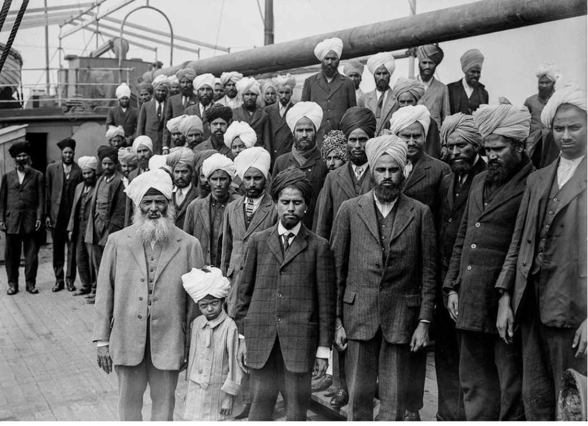

The historical and contemporary presence of Muslim communities in Canada has
often remained obscured, unacknowledged, and misrepresented. Their profound
contributions to Canadian society warrant deeper appreciation,
acknowledgement, and understanding. Our research project aims to contribute
to this cause by focusing on South Asian Muslim communities of B.C. We use
archival records, academic works, and personal interviews to highlight
these, often untold, stories of South Asian Muslim communities in B.C.
Far from being a monolithic religion, Islam is a mosaic. Its two main sects are
Sunni and Shia. Sunni sect is further divided into various sub-sects like Wahabi,
Salafi, Barelvi, and Deobandi. Shia sect, on the other hand, is also divided
into further sub sects like Twelver Shi'ism, and Ismailism. Other groups like
Sufism exist across any such sectarian divisions. Historically, Muslim populations
have also integrated themselves into diverse local customs, cultures, and traditions
of Asia, Middle East, and Africa. Our project hopes to honor these diverse ways
of being a Muslim.
Lastly, we also acknowledge that South Asian Muslims in BC is a first of its
kind project. We hope that this preliminary project will facilitate further,
in-depth research projects, and exhibitions in the future. We welcome any feedback
which can help us improve this project.
Early migration to BC
Early migration to BC (till 1962, when the immigration policies changed
to merit/point system) Due to the lack of archives, we find only small
traces of early South Asian muslim presence in B.C. For example, a
memorandum sent by W.C Hopkinson to W.W Cory in 1912 indicates that the
small number of muslims living in Vancouver at that time raised 900$ and
sent it to the “Grand Vizier of Turkey” for the “brave soldiers” of the
Ottoman empire[1]. Similarly, a name, Roum Shah, emerged in a 1914
newspaper clipping of The Sun. When the ship of Komagata Maru landed on
the shores of Vancouver in 1914, around 24 muslims were estimated to be
on board. The well documented story of one of these muslim passengers,
Barkatullah, indicates how bravely they were all fighting against the
imperial world order of their times. The Shore committee formed to
support and collect funds for Komagata Maru passengers also included
muslim figures like Husain Rahim, and Muhammad Akbar. Another archived
muslim figure of the early twentieth century is Imanat Ali Khan who was
working in the Fraser Mills at the time of the Komagata Maru incident.
Lastly, in the Duncan Gurdwara, the name of a Dan Ali Mohammed has been
plastered for his contributions in building the Gurdwara
Earlly Muslim migrants / historical Muslim figures in BC
Early migration to BC (till 1962, when the immigration policies changed
to merit/point system) Due to the lack of archives, we find only small
traces of early South Asian muslim presence in B.C. For example, a
memorandum sent by W.C Hopkinson to W.W Cory in 1912 indicates that the
small number of muslims living in Vancouver at that time raised 900$ and
sent it to the “Grand Vizier of Turkey” for the “brave soldiers” of the
Ottoman empire[1]. Similarly, a name, Roum Shah, emerged in a 1914
newspaper clipping of The Sun. When the ship of Komagata Maru landed on
the shores of Vancouver in 1914, around 24 muslims were estimated to be
on board. The well documented story of one of these muslim passengers,
Barkatullah, indicates how bravely they were all fighting against the
imperial world order of their times. The Shore committee formed to
support and collect funds for Komagata Maru passengers also included
muslim figures like Husain Rahim, and Muhammad Akbar. Another archived
muslim figure of the early twentieth century is Imanat Ali Khan who was
working in the Fraser Mills at the time of the Komagata Maru incident.
Lastly, in the Duncan Gurdwara, the name of a Dan Ali Mohammed has been
plastered for his contributions in building the Gurdwara
Ghadar Party
Ghadar Movement Flag The Ghadar Party, comprised of Indian expatriates in Canada and the
United States, was an anti-colonial organization with the objective of
overthrowing British rule in the Indian subcontinent through armed
resistance. It established branches worldwide, including in Vancouver,
BC.[5] Among its early leaders were individuals from the Sikh, Hindu and
Muslim communities, and its publication prominently featured the names
"Ram, Allah, and Nanak" on its masthead.[6]
Academic studies of the movement often focus primarily on its secular and
socialist aspects, neglecting the diverse religious influences that also
shaped it. This oversight is particularly evident in the case of Muslim Ghadarites,
whose religious beliefs are dismissed as unrelated to their involvement in
the movement.[7] Ironically, two prominent Muslim members of the movement,
Maulana 'Ubayd Allah Sindhi (1872-1944) and Maulana Barkatullah Bhopali (1859-1927)
who was also a passenger of the Komagata Maru, were esteemed scholars deeply
rooted in traditional teachings.
Maulana 'Ubayd Allah Sindhi (1872-1944) stands as a significant figure within
the Ghadar movement. A Deobandi school of thought follower, he embraced anti-imperialist
ideals, going beyond religion and societal barriers in his hope for India's
liberation. He was known for his involvement in the 1915 Ghadarite project,
Provisional Azad Hind Government project in Afghanistan where he became Home
Minister and Barkatullah as Prime Minister.
Maulana Barkatullah Bhopali (1859-1927) is known for being one of the founding
members of the Ghadar Party, and his stays and work in Europe, Japan and
the Americas. It is worth noting that Barkatullah was one of the passengers
in the Komagata Maru, however, he was not one of the selected passengers
who were allowed to stay and so, went to San Francisco. Both Barakatullah
and Sindhi, along with the majority of their Ghadarite members, held onto
the idea of Hindu-Muslim unity until the very end
Komagata Maru

Komagata Maru incident Early migration to BC (till 1962, when the immigration policies changed
to merit/point system) Due to the lack of archives, we find only small
traces of early South Asian muslim presence in B.C. For example, a
memorandum sent by W.C Hopkinson to W.W Cory in 1912 indicates that the
small number of muslims living in Vancouver at that time raised 900$ and
sent it to the “Grand Vizier of Turkey” for the “brave soldiers” of the
Ottoman empire[1]. Similarly, a name, Roum Shah, emerged in a 1914
newspaper clipping of The Sun.
When the ship of Komagata Maru landed on the shores of Vancouver in 1914,
around 24 muslims were estimated to be on board. The well documented story
of one of these muslim passengers, Barkatullah, indicates how bravely they
were all fighting against the imperial world order of their times. The Shore
committee formed to support and collect funds for Komagata Maru passengers
also included muslim figures like Husain Rahim, and Muhammad Akbar. Another
archived muslim figure of the early twentieth century is Imanat Ali Khan
who was working in the Fraser Mills at the time of the Komagata Maru incident.
Lastly, in the Duncan Gurdwara, the name of a Dan Ali Mohammed has been plastered
for his contributions in building the Gurdwara.
Orientalism
Edward Said has defined Orientalism as a production of stereotypical
knowledge about the customs and traditions of the East or Orient since
at least the "late eighteenth century" in the West.[9] In the early
twentieth century B.C too, we find an interest in plays, novels, and
articles about the East, or Orient. The December 8, 1906 issue of The
Victoria Daily Times announced the serial publication of a novel, The
Persian Roseleaf, written by Col. Andrew Haggard. The novel was based on
his experiences of fighting battles in Soudan. Similarly, a play titled
“Paradise of Mahoment” was staged in the Victoria Theatre in October,
1911, after its “successful” staging in New York. Though seemingly
harmless and entertaining, these and other similar works of Orientalism
shaped popular perceptions about Muslims in the early twentieth century
B.C.
[1]Brij Lal. 1976. “East Indians in British Columbia 1904-1914 : An
Historical Study in Growth and Integration.” Retrospective Theses and
Dissertations, 1919-2007. T, University of British Columbia, doi: http://dx.doi.org/10.14288/1.0093725, Page 92.
[2] Mayo, Joan. 1997. Paldi Remembered: 50 Years in the Life of a Vancouver
Island Logging Town. Duncan: Priority Printing, Pp3.
[3] Iqbal Hussain. “BARKATULLAH — A HALF-FORGOTTEN REVOLUTIONARY.” Proceedings
of the Indian History Congress 66 (2005): 1061–72. http://www.jstor.org/stable/44145919, Page 1061.
[7] Mohammed Ayub Khan. “His Master’s Voice?: Ubayd Allah Sindhi’s Re-interpretation
of Orthodox Islam as Inclusive Revolutionary Ideology.” Ghadar Centennial
Conference Proceedings, Centre for Indo-Canadian Studies, University of the
Fraser Valley, 2013, 99. https://ufv.ca/media/assets/cics/resources/68861-UFV-Booklet-May-2015.pdf